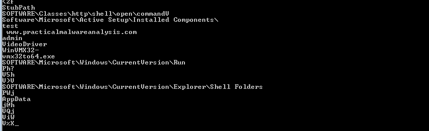
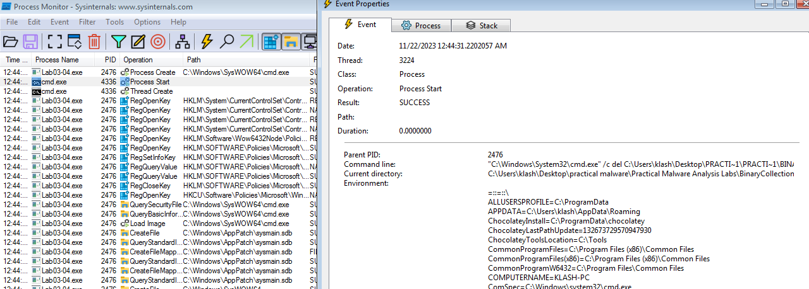

Practical Malware Analysis - Lab 3
On Win7:
Running procmon and setting a filter on the malware executable name and clearing out all events just before running.
Starting Process Explorer.
Gathering a first snapshot of the registry using Regshot.
Setting up network traffic logging using Wireshark.
Setting up ApateDNS pointing to my linux VM
Lab 3-1
Analyze the malware found in the file Lab03-01.exe using basic dynamic analysis tools.
Q1: What are this malware’s imports and strings?
Using PeBear we get only exitprocess import from kernel32.dl (packed?)
Using Strings command we get many useful information like registries used, domain name, and some executable and driver name
Q2: What are the malware’s host-based indicators?
Q3: Are there any useful network-based signatures for this malware? If so, what are they?
Lab 3-2
Analyze the malware found in the file Lab03-02.dll using basic dynamic analysis tools.
Q1: How can you get this malware to install itself?
By utiltizing rundll32.exe
Q2: How would you get this malware to run after installation?
Using sc command
Q3: How can you find the process under which this malware is running?
Using filter process name in Process Explorer
Q4: Which filters could you set in order to use procmon to glean information?
By parent PID
Q5: What are the malware’s host-based indicators?
Q6: Are there any useful network-based signatures for this malware?
Lab 3-3
Execute the malware found in the file Lab03-03.exe while monitoring it using basic dynamic analysis tools in a safe environment.
Q1: What do you notice when monitoring this malware with Process Explorer?
Q2: Can you identify any live memory modifications?
Q3: What are the malware’s host-based indicators?
Q4: What is the purpose of this program?
Lab 3-4
Analyze the malware found in the file Lab03-04.exe using basic dynamic analysis tools. (This program is analyzed further in the Chapter 9 labs.)
Q1: What happens when you run this file?
It deletes itself, in procmon searching for ProcessCreate for any processes created we notice it calls cmd to delete the exe
Q2: What is causing the roadblock in dynamic analysis?
Most likely it requires certain conditions for it not be deleted (command line argument or not VM environment)
Q3: Are there other ways to run this program?
Don’t know at this stage